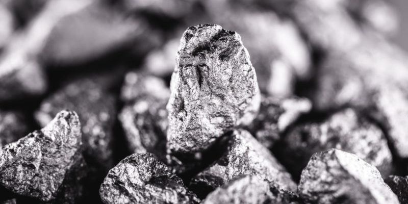

La plata es un metal de color blanco plateado y brillante. Es muy maleable y dúctil, y se destaca por ser el mejor conductor de electricidad y calor. Resiste la corrosión, aunque puede oscurecerse con el tiempo al entrar en contacto con sustancias que contienen azufre.
La plata no es un nutriente. En algunos alimentos se utiliza plata comestible en pequeñas cantidades para decorar postres, chocolates y bebidas.
La plata es el metal con mayor conductividad eléctrica del mundo. Además, su símbolo Ag proviene de la palabra latina argentum.